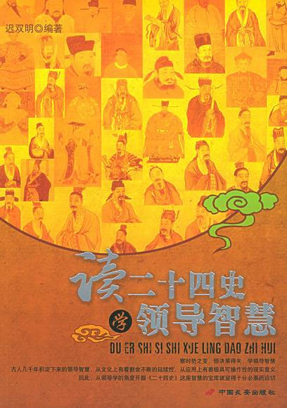

《UNIX编程艺术》

总体观点
埃里克·雷蒙德是开源运动旗手，花五年把贝尔实验室几十年攒下的设计直觉——让 UNIX 从 1969 年活到今天的底层智慧——提炼成 17 条设计规则，加整套工具、社区、文化的论述。
核心论点：好软件不是功能堆出来的，是靠克制做出来的。功能做减法、部件做小、接口做薄，让小程序互相组合干大事。不教某门语言语法，教的是“审美”：什么设计美而耐久，什么丑而腐烂。
它回答永恒问题：技术几年换一茬，什么不变？答案是设计哲学。从 Linux 到开源运动、微服务、DevOps，骨子里都是这本书的东西。读完再看任何代码，都会问一句：这够简洁吗？
核心观点
-
1. 清晰胜于机巧：代码首先是写给人看的
“清晰原则”：代码被读的次数远多于被写的次数。耍小聪明玩晦涩技巧，今天省三行巧妙代码，明天别人花三小时才看懂，血亏。宁可多写几行大白话，别写一行天书。
写菜谱“适量盐、少许糖、火候看着办”，看的人想打人。写“盐 3 克，中火 2 分钟”才靠谱。变量名 tmp、x1 的聪明写法，不如老老实实叫 user_name_list。 -
2. 小工具加管道，能干大事情（组合原则）
UNIX 看家本领：每个程序只做好一件事，用“管道”像乐高一样拼起来。设计时就要考虑拼接——你的程序要能方便地跟别人的连起来干活，别做“瑞士军刀”式巨无霸，迟早没人维护得动。
从日志找访问量 Top10 的 IP：一行命令串起六七个小工具，cat 日志 | 提取 IP | 排序 | 计数 | 取前 10。反观“日志分析平台”，装半天配置一堆，查个 Top10 要点十几个页面。 -
3. 文本流：最笨但最通用的接口
UNIX 坚持用纯文本做程序间交换格式：人能直接看，任何语言都能读写，出问题一眼看出哪错了。二进制、私有格式更“高效”，但只有你的程序能读，调试靠猜，十年后迁移数据只能哭。
两家快递交接：一家用透明塑料袋，里面是啥一眼看清；一家用焊死的铁箱子，只有他家有钥匙，瘪了都不知道碎没碎。配置文件用 YAML/JSON 而不用神秘二进制，就是文本化的胜利。 -
4. 没事别吭声，错了就大声说（缄默与补救原则）
“缄默原则”：没什么可说的就安静干活，别刷屏——正常执行输出一堆“成功！”全是噪音。“补救原则”：一出错立刻退出，把错误说足——错在哪、为什么、怎么修，一次讲清，别让用户猜谜。
靠谱管家：一切正常一声不吭；水管爆了立刻说“厨房接头裂了，已关总闸，师傅电话 XXX”。反面教材：平时弹窗报喜，出错只丢“未知错误（0x0001）”，用户干瞪眼。 -
5. 先做出能跑的原型，再谈优化
“优化原则”：雕琢前先有原型，跑之前先学会走。还没跑通就纠结“快 5%”，90% 的优化都优化在不重要的地方。先写清晰正确的版本，实测找到真瓶颈再动手，且不许破坏清晰度。
装修先保证水电通、墙不漏，住进去发现西晒严重再加遮阳帘。一上来纠结“吊灯欧式还是美式更省电”，房子还没盖好呢——过早优化是万恶之源。 -
6. 策略和机制分开：做什么和怎么做是两回事
“策略”（要什么规则）和“机制”（怎么实现）分开。机制保持中立通用，策略放上层灵活配置。换规则不用改代码，换实现不用改规则。
报销系统“超 5000 要总监审批”是策略，“审批流引擎怎么跑”是机制。5000 做成可配置，财务政策一变改个数字就行；写死在代码里，政策一变就得改代码重新上线。 -
7. 程序员的时间，比机器的时间贵得多
宁可多花机器一分钱，不花程序员一秒钟。硬件越来越便宜，人的工资越来越贵，凡能用机器资源换程序员时间的买卖都划算。别为省 1MB 内存写出没人敢动的祖传代码。
月薪几万，每周花 3 小时自己拖地“省”200 块保洁费，这账怎么算都亏。用现成库多占 10MB 内存，换来不用造轮子、不用半夜修 bug——吝啬要吝啬复杂度，不是内存。
全书思维导图 · 知识脉络树
全书结构
-
第一部分 哲学（第1-3章）：哲学、历史与对比
Unix 核心哲学是保持简单（KISS 原则）：模块原则、清晰原则、组合原则；用管道连接专注做好一件事的小工具。
通过 `cat access.log | grep 404 | awk '{print $1}' | sort | uniq -c` 一行命令，优雅组合小工具完成访问分析。 -
第二部分 设计·模块性与文本化（第4-5章）：模块性、好协议与文本流
模块追求高内聚松耦合，将纯文本流和透明的人类可读协议作为通用的输入输出媒介，摆脱专有二进制黑盒绑架。
HTTP、SMTP 等互联网基石协议均设计为明文文本交互，开发者仅用 telnet 或 curl 即可轻松抓包调试。 -
第二部分 设计·透明性与多道程序（第6-7章）：透明性、可检验性与进程分离
系统设计必须具备透明性与可检验性让排查一目了然，用轻量进程隔离防范单点崩溃，以管道或套接字通信。
Nginx 采用 Master-Worker 多进程架构，某个 Worker 进程由于请求崩溃时，Master 自动将其拉起，全站毫不受影响。 -
第二部分 设计·微型语言与生成（第8-9章）：微型语言与代码生成
遇到复杂领域问题时发明微型专用语言（如 DSL、正则、Yacc），编写代码生成工具让程序去生成程序。
利用正则表达式或 SQL 声明式提取数据，无需手动编写复杂的双重循环与字符串字符比对算法。 -
第二部分 设计·转化与配置（第10-13章）：配置、接口、优化与复杂度
配置文件保持纯文本可读，CLI与GUI接口正交解耦，不做过早优化，严厉控制系统的偶发与本质复杂度。
Git 核心功能完全通过 CLI 暴露，各类图形化客户端仅充当界面展示外壳，使得自动化脚本与交互操作具备同等能力。 -
第三部分 实现（第14-17章）：语言、工具、重用与可移植性
按问题场景选择合适的高级语言与工具链，不重复造轮子，严守 POSIX 标准以保障跨平台可移植性。
核心计算模块用 C/Rust 编写以保障极致性能，外围胶水层与定时任务用 Python/Shell 编写以追求快速迭代。 -
第四部分 共同体（第18-19章）：开源文化与Unix的未来
开源协作、代码公开与对等评审构建了繁荣的软件共同体，软件生态的长青源于共享、透明与开放标准。
Linux 和众多开源基础软件凭借全球成千上万工程师的持续公开审查与演进，战胜了众多封闭高昂的专有商业 Unix。